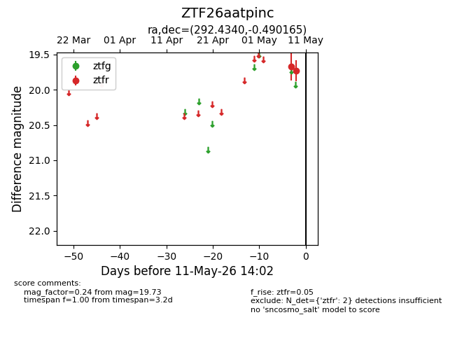
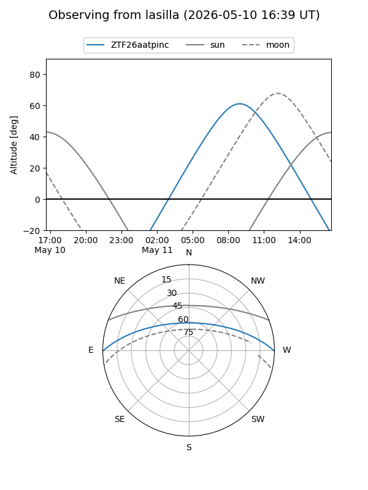
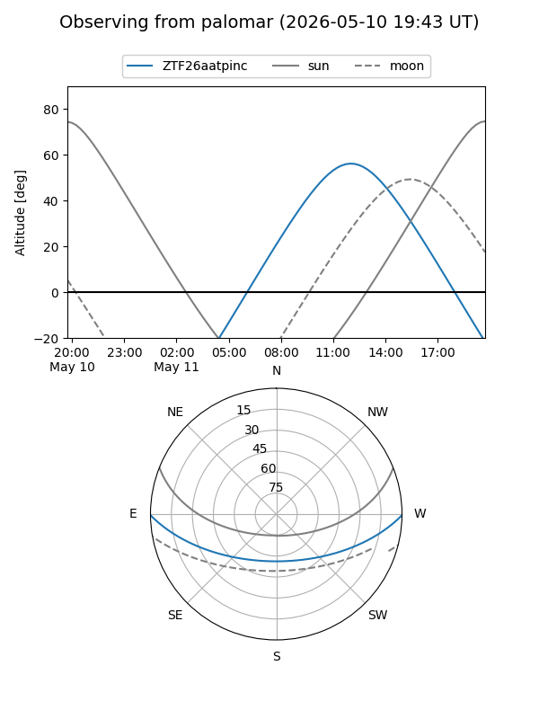

ZTF26aatpinc
Target ZTF26aatpinc at 2026-05-11 14:03
Aliases and brokers:
FINK: link
Lasair: link
ALeRCE: link
alt names
ZTF26aatpinc (ztf,fink_ztf)
Coordinates:
equatorial (ra, dec) = 292.4340,-0.49017
equatorial (HMS+DMS) = 19:29:44.17,-00:29:24.59
galactic (l, b) = (36.8901,-8.73867)
Flags:
Photometry:
last ztfr=19.73
2 ztfr detections
Lightcurve

Visibility


Additional plots